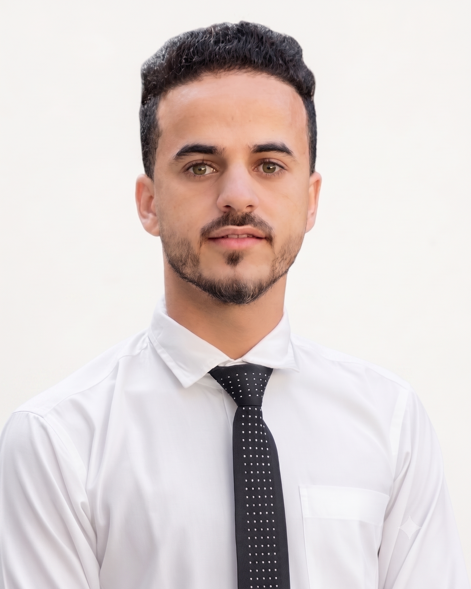

AI and automation trainer
National University, Third Tech Camp, 27 April to 20 May 2026
Taught n8n workflow automation to 41 trainees, with a training commitment of 20 hours per week.

Information Technology graduate working on artificial intelligence, machine learning, workflow automation and AI agents, moving from building AI systems toward evaluating them rigorously.
I completed a Bachelor of Information Technology at National University, Yemen, ranking first in my cohort in every academic year. My work combines data analysis, machine learning, software development and workflow automation.
My main technical project, NetGuard AI, combines a machine-learning classifier with automated workflows, a dashboard and an AI agent that produces analyses, summaries and reports, and was tested in the field on real equipment. I now want to go deeper: to study how machine-learning models and AI agents behave outside their training data, and to build AI systems that can be trusted in practice.
Alongside my studies I have taught, represented students, and worked in AI-enabled digital marketing, which has given me practical experience in delivering and supporting real systems.
My interests centre on developing and evaluating machine learning methods for practical, data-intensive problems.
Questions I want to work on: how reliably machine-learning models and AI agents perform outside their training data, how evaluation design affects reported accuracy, and how AI systems can be connected safely to automated workflows.
An end-to-end AI system: a machine-learning classifier, n8n automation workflows, a web dashboard and an AI agent working together.
The 99% figure comes from my own test split on one dataset. Cross-dataset validation and per-class results are the next steps I plan to add.
A computer-vision system that analyses photos of retail refrigerators and shelves, recognises visible products, counts them and compares the counts with an expected product list entered by the user.
Describes the intended design. Performance results will be added once evaluated.
Streamlit app for uploading datasets and running exploratory analysis with numerical summaries and visualisations.
Streamlit, data visualisation
Locally run assistant concept for cybersecurity questions, using the Phi-3 model through Ollama.
Ollama, Phi-3
YOLO-based detection connected to an automated email alert workflow.
YOLO, email automation
Smart-home prototype integrating an ESP32 board and sensors.
Embedded systems, sensors
Mobile and web application built with Flutter and Laravel.
Flutter, Laravel
More repositories will be added on GitHub as they become public.
National University, Yemen, 2022 to 2026
GPA 94/100, equivalent to 4.0/4.0 on the common Gulf (UAE-style) scale, where 90 to 100 = A = 4.0. First-Class Honours. First place in the academic cohort in each academic year.
Strengths include calculus, statistics and probability, programming and databases, and applied AI and machine learning, supported by practical software and AI projects.
National University, Third Tech Camp, 27 April to 20 May 2026
Taught n8n workflow automation to 41 trainees, with a training commitment of 20 hours per week.
Loveen Fashion Store, Riyadh, Saudi Arabia
Manage AI-supported marketing campaigns and the Salla online store, follow orders and customer inquiries, and build AI agents and workflow automations.
National University, Yemen
Supported students in their coursework and practical work.
National University, Yemen, four academic years
Communicated academic matters between students and faculty and helped coordinate student needs. Received a certificate recognising service to students and academic support.
Supervised and unsupervised learning, model training and evaluation.
Neural networks for vision and language.
Exploratory analysis, statistics and visual reporting.
Connecting models to real workflows.
Transcript and graduation certificate are available on request.